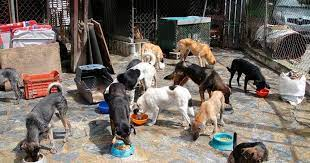
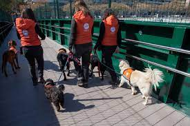

Mejoramos la vida de los animales que están en situación de maltrato y/o abandono. Aliviar su sufrimiento y darles un lugar importante en nuestra sociedad.

Adoptame
Adopta y transforma vidas. En nuestro refugio, cada animal espera ansiosamente un hogar lleno de amor y cuidado. Al elegir la adopción, estás dando una oportunidad a un compañero fiel. Juntos, podemos construir historias de felicidad y gratitud. ¡Haz la diferencia y adopta hoy!

Apadríname
Apadrinar un animal es brindar esperanza y apoyo vital. Tu contribución mensual asegura que nuestros amigos peludos reciban atención médica, alimento y refugio. Conviértete en el ángel guardián de un ser necesitado y forma parte de su camino hacia un futuro lleno de amor y bienestar.

Haz un aporte
Haz un aporte y sé parte del cambio positivo para nuestros queridos animales. Tu generosidad nos permite continuar con nuestra misión de brindarles un hogar seguro y cuidados de calidad. Cada donación, por pequeña que sea, hace una gran diferencia en sus vidas. ¡Únete a nosotros y juntos marquemos la diferencia!